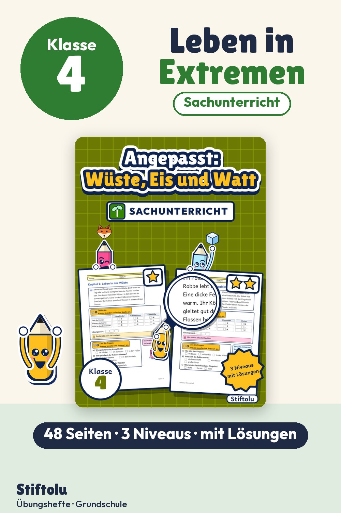

Werbung · Übungsheft von Stiftolu
Leben in Wüste, Polargebiet und Wattenmeer – Sachunterricht Klasse 4

Dick gepolstert im Eis, wasserarm in der Wüste, im Schlick am Watt: Kurze Sachtexte zeigen, wie Tiere und Pflanzen an ihren Lebensraum angepasst sind. Kinder ordnen Merkmale ihrem Nutzen zu und erfinden ein eigenes Tier. 48 Seiten für Klasse 4 mit 3 Niveaus, Lösungen und Handreichung, erhältlich auf eduki.